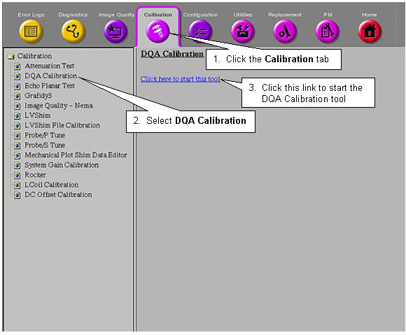

Operating Documentation
Direction 5440001-3, Rev# 6
Signa HDxt Service Methods
Module Version 1.0, Version Date 5/3/07
Operating Documentation |
| Required Persons | Preliminary Reqs | Procedure | Finalization |
|---|---|---|---|
| 1 | Not Applicable | 30 mins | Not Applicable |
The electrical isocenter is the point where the x, y and z gradients are nulled. It is very important that this point be accurately located in order to pass the image quality tests. The procedure uses the DQA phantom and Daily Quality tool for analyzing the data. The Daily Quality tool analyzes the DQA image and determines the optional z direction offset that is needed to center the landmark at the z isocenter. The tool optionally updates the isoVectorZ value contained in the system configuration file (MRconfig.cfg). If you choose to update the system configuration file, you must reboot the system.
| NOTE: | For TwinSpeed, the entire procedure only needs to be run on one gradient mode, Whole Body (WB). Running the procedure on both WB and ZOOM will not hurt, but is just not necessary. |
| Last Update | 09/29/2004 |
| ||||
| POISON HAZARD! | ||||
| Signa 1.5T and 1.0T System PHANTOMs CONTAINS NICKEL, A SUSPECT CARCINOGEN. | ||||
| DO NOT INGEST. DISPOSE OF AS A HAZARDOUS WASTE ACCORDING TO STATE AND FEDERAL REGULATIONS. |
| ||||
| POISON HAZARD! | ||||
| Signa 3.0T System PHANTOMs CONTAINS SILICON OIL, A SUSPECT CARCINOGEN. | ||||
| DO NOT INGEST. DISPOSE OF AS A HAZARDOUS WASTE ACCORDING TO STATE AND FEDERAL REGULATIONS. |
| Condition | Reference | Effectivity |
|---|---|---|
Signa software operational | - | - |
- | - | |
Table has been calibrated per “Longitudinal Drive System” calibration procedure. | - | - |
The Daily Quality tool analyzes the DQA image to determine if the image is skewed in the x direction (x-y planes). Analysis performed on an image with a few degrees of skew will give an accurate isocenter location. If the image is skewed more than a few degrees, it will still be analyzed, but the adjust values for isoVector-Z may be inaccurate. In this case, the phantom should be repositioned and another scan performed.
Select [Cal/Checks] from the MR Tools menu. Click [DQA Calibration], and then click [Start].
For 9.x, 10.x and 11.x: To start the DQA Calibration tool from the Service Browser, follow the instructions on Illustration 1 below:
Illustration 1: Starting DQA Calibration tool

Perform appropriate Isocenter-Z scan Isocenter-Z Scan Procedure.
When this prompt appears: Welcome to Automated DQA calibration tool” app. !!Please perform [Phantom Position] test scan!!”, press <Enter> when the Proper Phantom Position is obtained.
At the prompt Press Return when the desired scan(s) is completed [Y],” look at the DQA-III phantom image on the image monitor. Be sure it is not skewed more than a few degrees. When the phantom is properly positioned, press <Enter>.
When prompted Accessing information from last run number, followed by the values and description of the Last Exam, accept the default by pressing <Enter> if the correct image data is displayed. If the data set is not correct, type <n>and press <Enter>.
If you entered <n> at the “Accept the Default” prompt, you'll be prompted to enter each image key manually.
Enter the Exam number.
Enter the Series Number.
Enter the Image Number.
If the software does not recognize the “Exam Description,” and the following is displayed:”!!!Unknown Exam Description!!! Please enter test mode manually.”
If the phantom is skewed too much, the following is displayed: “<Attention: specified text position is out of viewport bounds>. If this is displayed, verify the phantom is not skewed, then re-scan before re-running this tool.
If the scan prescription is incorrect for Isocenter Calibration, verify that the scan prescription is correct and the correct image data set was selected.
If Isocenter Calibration is OK, you'll be prompted “Isocenter calibrated, no adjustment required.
If Isocenter Calibration needs adjustment, you'll be be prompted “<Update IsoVectorZ in MRconfig.cfg (Y,N)> Type <y ><Enter> to update the MRconfig.cfg file.
A final prompt asks you “<Would you like to perform another calibration [Y/N>. Type either Y for yes or N for no, then press <Enter> to quit.
If you updated Mrconfig.cfg, type: <y>.
If you did not update Mrconfig.cfg, type: <y>or <n>,
Press <Enter>.
If the IsoVectorZ value is updated in MRconfig.cfg, then press Back to Align at the keypad on the front of the Magnet Enclosure and wait for the table to return to Landmark.
Perform a [TPS Reset].
Establish a Landmark on the phantom (No need to return to Home position) and then repeat the steps in Isocenter-Z Image Analysis until the scan analysis indicates [No Adjustment Required].
Proceed to ISOCenter Calibration Check.
Set up a scan.
Click on [New Pt], and press <Enter>.
ID: geservice
Name: isocenter cal
Weight (lb.): 111
Place the DQA phantom in the head coil.
Landmark in the sagittal and axial planes.
At the keypad on the front magnet enclosure, press <LANDMARK> then <MOVE TO SCAN>.
| NOTE: | Do not rotate or skew the phantom in the head coil. This will cause errors in the analysis of Z isocenter. Landmark errors can also cause errors in the analysis. |
At the operator workspace, prepare the system to scan using Isocenter Cal (DQA) Protocol.
Select [Scan] (system auto prescans first).
Check the geometry of the axial image. Ensure that images are not rotated nor skewed. If they are, reposition the phantom and rescan.
After the isocenter has been successfully located using the Daily Quality tool, the cradle position will be moved (without changing the landmark) and repositioned back to isocenter. Another scan will be executed and analyzed with the Daily Quality Tool. Repeatable isocenter positioning should produce the status “No adjustment required.” If not, perform the Longitudinal Drive System calibration procedure.
After the scan analysis indicates “No adjustment required,” press FAST OUT to move the phantom/head coil out to somewhere near the alignment light landmark position. Then use <MOVE TO SCAN>to return the phantom to isocenter.
At the operator workspace, click on [Scan]. The system auto prescans first.
After the scan is complete, proceed to Section 4, Isocenter-Z Image Analysis. Repeatable isocenter positioning should produce the status “No adjustment required.” If not, perform the Longitudinal Drive System calibration procedure, then re-run the Electrical Isocenter calibration procedure.
No finalization steps.